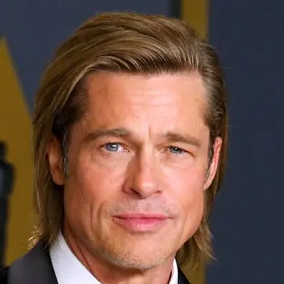
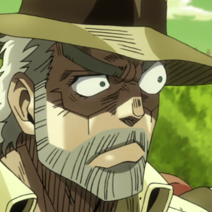
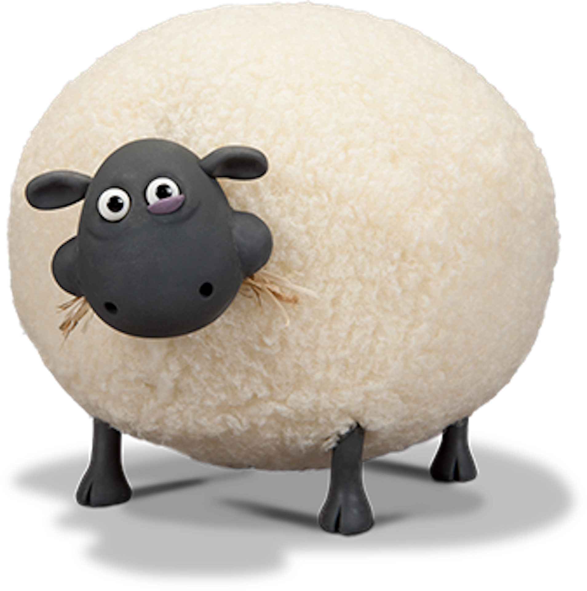

Opinie użytkowników
John
★★★★★
KURŁA PANIE TAKIEJ WENDKI TO JA JESZCZE NIGDY NIE MIOŁEM. ŻONA I DZIECI
[1]
ZADOWOLONE
Brad Pitt

★★★★★
Ten Wendkator 3000 to jest to! Łowi tyle ryb, że w końcu mam czas na cokolwiek! Aż mi się przypomina, jak w Fight Club
[2]
mówiłem o mydle - ta wędka to taka sama innowacja, tylko bardziej... rybna!
Joseph Joestar

★★★★★
OH MY GOOOOOOD MYŚLAŁEM ŻE PO POKONANIU TRZECH AZTECKICH BOGÓW
[3]
WIDZIAŁEM JUŻ WSZYSTKO, NIE SADZILEM ŻE UJRZĘ COŚ TAK NIESAMOWITEGO
Richard Watterson
★★★★☆
Jestem buł- jestem buł- jestem bułką no i cześć.
[4]
Shirley

★★★★★
BEEEEEEE
[5]